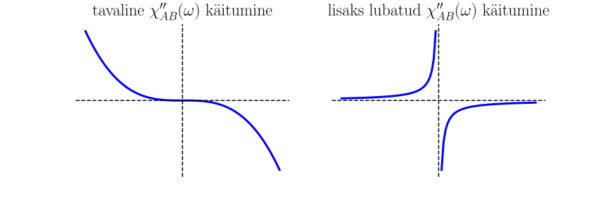
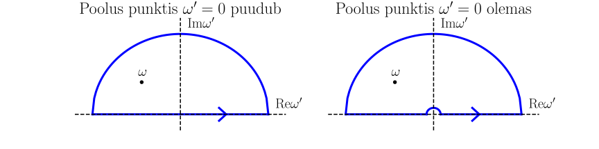

Lineaarse reaktsiooni teooria
Contents
5.3. Lineaarse reaktsiooni teooria¶
Füüsikas on arvukalt selliseid olukordi, kus on oluline leida süsteemi reaktsioon välisele häiritusele. Sageli võib lugeda häiritust piisavalt nõrgaks ning piirduda häiritusest sõltuvates funktsioonides ainult lineaarse lähendusega. Tulemuseks on lineaarse reaktsiooni teooria.
5.3.1. Süsteemi lineaarne reaktsioon¶
Juhul kui süsteemile mõjub väline häiritus saab süsteemi Hamiltoni operaator esitada Schrödingeri esituses kujul
kus \(\hat{H}^{0}\) on häirimata süsteemi hamiltoniaan, mis ajast ei sõltu ja \(\hat{H}'(t)\) on välise häirituse operaator, mis üldjuhul sõltub ilmutatud kujul ajast. Olgu viimane esitatud kujul
kus \(\hat{A}\) on ilmutatud kujul ajast mittesõltuv operaator ja \(g(t)\) on ette antud aja funktsioon, mida nimetatakse ka üldistatud väliseks jõuks. Eeldame, et \(\hat{A}\) on hermiitiline, \(\hat{A}^+=\hat{A}\). Siis \(g(t)\) on reaalne, kuna hamiltoniaan peab olema hermiitiline operaator.
Süsteemi statistiline operaator \(\hat{\rho}(t)\) rahuldab Liouville’i-von Neumanni võrrandit
Olgu mingile füüsikalisele suurusele vastab operaator \(\hat{B}\) (Schrödingeri esituses). Operaatori \(\hat{B}\) statistiline keskväärtus on
Eeldatakse, et häirituse puudumisel on süsteem termodünaamilises tasakaalus, kus \(\hat{\rho}(t)=\hat{\rho}^0\). Näiteks Gibbsi tasakaalulise kanoonilise ansambli puhul
Termodünaamilises tasakaalus tähistame operaatori \(\hat{B}\) statistilist keskväärtust järgmiselt
Häirituse sisselülitamine viib süsteemi välja termodünaamilises tasakaalust. Lineaarse teooria raames huvitab meid, kuidas süsteem reageerib välisele häiritusele.
Eeldusel, et väline häiritus on nõrk, saame lineariseeritud Liouville’i-von Neumanni võrrandi
Toome sisse kvantmehaanilise Liouville’i operaatori
kus \(\hat{L}^{0}\) on häirimata süsteemi Liouville’i operaator ja \(\hat{L}'_{t}\) on häiritusele vastav Liouville’i operaatori osa. Liouville’i operaatori definitsiooni kohaselt
kus \(\hat{f}\) on suvaline operaator. Vastavalt sellele
Eeldame, et lõpmata kauges minevikus oli süsteem termodünaamilises tasakaalus, \(\hat{\rho}(t)|_{t\to-\infty}=\hat{\rho}^0\). Sellisel juhul on lineariseeritud Liouville’i-von Neumanni võrrandi lahendiks
Ülesanne
Kontrollige, et statistiline operaator
\(\qquad\hat{\rho}(t)= \hat{\rho}^{0} - i \int \limits_{-\infty}^{t}\mathrm{d}t' e^{-i(t-t')\hat{L}^{0}}\hat{L}'_{t'}\hat{\rho}^{0}\),
kus \(\hat{L}^{0}\hat{f}=\hbar^{-1}\left[\hat{H}^{0},\hat{f}\right]\) ja \(\hat{L}'_{t}\hat{f}=\hbar^{-1}\left[\hat{H}'_{t},\hat{f}\right]\) rahuldab lineariseeritud Liouville-von Neumanni võrrandit
\(\qquad i\hbar\frac{\partial \hat{\rho}(t)}{\partial t}=\left[\hat{H}^{0},\hat{\rho}(t)\right]+\left[\hat{H}'_{t},\hat{\rho}^{0}\right]\).
Algtingimusena eeldatakse, et lõpmata kauges minevikus oli süsteem termodünaamilises tasakaalus.
Süsteemi iseloomustavale dünaamilisele suurusele vastab Schrödingeri esituses operaator \(\hat{B}\). Süsteemi kõrvalekaldumist termodünaamilisest tasakaalust, st süsteemi reaktsiooni välisele häiritusele, kirjeldab makroskoopilisel tasemel suurus
Leiame selle suuruse kasutades lineariseeritud Liouville’i-von Neumanni võrrandi lahendit
Pidades silmas, et \(e^{\pm it\hat{L}^0}\hat{f}=e^{\pm\frac{i}{\hbar}t\hat{H}^0}\hat{f}e^{\mp\frac{i}{\hbar}t\hat{H}^0}\) suvalise \(\hat{f}\) korral, saame kirjutada
Siin kasutasime seda, et jälje all võib operaatoreid tsükliliselt ümber tõsta. Näeme, et \(\hat{B}(t)\) on operaator Heisenbergi esituses, mis on genereeritud häirimata süsteemi Hamiltoni operaatori poolt. Arvestades, et \(\hat{L}'_{t}\hat{\rho}^0=\hbar^{-1}\left[\hat{H}'_{t},\hat{\rho}^0\right]\), saame tulemuseks
Saadud jälg on teatud keskväärtus tasakaalulises ansamblis. Seega võrdub süsteemi lineaarne reaktsioon
kus suurust \(\Phi_{AB}(t)\) nimetatakse reaktsioonifunktsiooniks. Näeme, et süsteemi reaktsioon \(\Delta\langle \hat{B}\rangle _{t}\) ajahetkel \(t\) on määratud välise häiritusega nii ajahetkel \(t'=t\), kui ka varasematel ajahetkedel \(t'<t\). Seega süsteemi reaktsioon on määratud muuhulgas ka häiritusega minevikus, niisiis arvestab valem hilinemisefektidega.
Saab ka näidata, et kui operaatorid \(\hat{A},\hat{B}\) on hermiitilised, siis reaktsioonifunktsioon on reaalne suurus. Seega, kui üldistatud jõud \(g\) ja reaktsioonifunktsioon \(\Phi_{AB}\) on reaalsed, siis süsteemi reaktsioon on ka reaalne suurus, mis on füüsikaliselt mõistlik.
5.3.2. Üldistatud vastuvõtlikkus¶
Kirjutame süsteemi reaktsiooni ümber kujul
kus integreerimismuutujalt \(t'\) on mindud üle uuele muutujale hilinemisajale \(\tau=t-t'\).
Toome sisse Fourier teisendused
Kui \(g(t)\) on reaalne \(g^\ast(t)=g(t)\), siis selle Fourier teisend on kompleksne, kuid kehtib seos \(g^\ast(\omega)=g(-\omega)\).
Kombineerides reaktsiooni avaldis koos Fourier teisenditega saame
Suurust \(\chi _{AB}(\omega)\) nimetatakse üldistatud vastuvõtlikkuseks välisele häiritusele, kuna see seob omavahel süsteemi reaktsiooni ja üldistatud jõu Fourier teisendite näol, \(\Delta\langle \hat{B} \rangle _{\omega}\) ja \(g(\omega)\) vastavalt.
Ülesanne
Näidake, et lineaarse reaktsiooni avaldisest \(\Delta\left\langle \hat{B} \right\rangle _{t} = \int \limits_{0}^{\infty}\mathrm{d} \tau \, \Phi_{AB}(\tau)g(t-\tau)\) järeldub lineaarse reaktsiooni Fourier’ teisendi \(\Delta\left\langle \hat{B} \right\rangle _{\omega} = \int \limits_{-\infty}^{\infty} \Delta\left\langle \hat{B} \right\rangle _{t} e^{i\omega t} \mathrm{d} t\) ja üldistatud jõu Fourier’ teisendi \(g(\omega) = \int \limits_{-\infty}^{\infty} g (t) e^{i\omega t} \mathrm{d} t\) vaheline seos \(\Delta\left\langle \hat{B} \right\rangle _{\omega} = \chi _{AB}(\omega)g(\omega)\), kus \(\chi _{AB}(\omega) = \int \limits_{0}^{\infty}\, \Phi_{AB}(\tau) e^{i\omega \tau} \mathrm{d} \tau\) on üldistatud vastuvõtlikkus.
Üldistatud vastuvõtlikkus on üldjuhul kompleksne
kus \(\chi _{AB}'(\omega)\) ja \(\chi _{AB}''(\omega)\) on vastuvõtlikkuse reaalne ja imaginaarne osad vastavalt. Kui reaktsioonifunktsioon \(\Phi_{AB}(t)\) on reaalne suurus, siis \(\chi _{AB}^\ast(\omega)=\chi _{AB}(-\omega)\), ehk
Seega on üldistatud vastuvõtlikkuse reaalosa sageduse paarisfunktsioon ja imaginaarosa – paaritu funktsioon.
On ka näha, et kohal \(\omega=0\) muudab \(\chi''_{AB}(\omega)\) märki ja \(\chi''_{AB}(0)=0\). Täiendavalt on lubatud ka selline käitumine, kui märgimuutus toimub lõpmatuse läbimisel
Need käitumised on toodud pildil.
{kind=link}
5.3.3. Kubo valem üldistatud vastuvõtlikkuse jaoks¶
Üldistatud vastuvõtlikkuse avaldis näeb välja praegu selliselt
Ülesanne
Näidake, et üldistatud vastuvõtlikkuse avaldis \(\chi_{AB}(\omega) = - \, \left(i\hbar\right)^{-1}\int \limits _{0}^{\infty}e^{i\omega t}\left\langle\left[\hat{A},\hat{B}(t)\right]\right\rangle^{0}\mathrm{d}t\) on teisendatav kujule \(\chi_{AB}(\omega) = - \, \left(i\hbar\right)^{-1}\int \limits _{0}^{\infty}e^{i\omega t}\mathrm{Tr} \, \left\{\left[\hat{\rho}^{0},\hat{A}\right]\hat{B}(t)\right\}\mathrm{d}t\).
Olgu
on operaator \(\hat{A}\) Heisenbergi esituses, mis on genereeritud häirimata süsteemi Hamiltoni operaatori poolt. Selle liikumisvõrrandiks on
Käsitleme need valemid formaalselt ja lähme üle imaginaarsele ajale \(t\to\xi=-i\hbar\lambda\), kus \(\lambda\) on reaalne suurus, siis
Integreerime edasi üle \(\lambda\) vahemikus \(0\ldots 1/k_\mathrm{B}T\)
Korrutame nüüd mõlemad pooled Gibbsi kanoonilise ansambli statistilise operaatoriga \(\hat{\rho}^0=Z^{-1}e^{-\frac{\hat{H}^{0}}{k_\mathrm{B}T}}\)
mis on tuntud Kubo samasusena. Selle samasuse abil saame esitada üldistatud vastuvõtlikkuse kujul
kus \(\xi = -i\hbar\lambda\). Seda tulemust tuntakse Kubo valemina üldistatud vastuvõtlikkuse jaoks.
5.3.4. Häirituse adiabaatiline sisselülitumine¶
Me eeldasime Liouville’i-von Neumanni võrrandi lahendamisel, et lõpmata kauges minevikus oli süsteem termodünaamilises tasakaalus. Selle tagamiseks kasutatakse häirituse adiabaatilist sisselülitumist, mis seisneb selles, et üldistatud jõu avaldises tehakse üleminek
kus \(\eta\) on lõpmata väike positiivne suurus \(\eta \rightarrow 0+\). Faktor \(e^{\eta t}\) tagab välise välja adiabaatilise sisselülitumise selles mõttes, et
\(t=-\infty\) korral on \(e^{\eta t}=0\) ja seega \(g(t)=0\)
lõplike aegade jaoks on meil \(e^{\eta t}= 1\)
Vaikimisi on eeldatud siin, et kõigepealt fikseeritakse aeg ja seejärel nimmakse piirile \(\eta \rightarrow 0+\).
Häirituse adiabaatilise sisselülitumise korral modifitseeruvad lineaarse reaktsiooni ja üldistatud vastuvõtlikkuse avaldised
kus eeldatakse, et aeg \(t\) on lõplik.
5.3.5. Monokromaatne väline häiritus¶
Kui väline häiritus on monokromaatne, siis \(g(t)\) Fourier teisendil on kuju
Sel juhul
Kuna üldistatud jõud on reaalne suurus \(g^\ast(t)=g(t)\), siis
Süsteemi reaktsioon on nüüd
kus kasutasime vastuvõtlikkuse definitsiooni (5.5).
Kui \(\omega=0\), siis on tegemist statsionaarse välise häiritusega. Sellisel juhul \(g(t)=2g_0\) ja
5.3.6. Välise häirituse energia neeldumine¶
Kui väline häiritus mõjub süsteemile, siis osa häirituse energiast neeldub süsteemis, muutudes soojuseks. Seda nimetatakse häirituse energia dissipatsiooniks.
Kui häiritus mõjub süsteemile, siis süsteemi makroskoopiline energia muutub. Olgu \(U\) süsteemi siseenergia. Klassikalisel juhul \(U=\langle \mathcal{H}\rangle\) ja \(\frac{\mathrm{d}U}{\mathrm{d}t}=\langle \frac{\mathrm{d}\mathcal{H}}{\mathrm{d}t}\rangle\), kus \(\mathcal{H}\) on Hamiltoni funktsioon.
Meil on kvantmehaaniline süsteem. Sel juhul vastab mingi klassikalisele suurusele \(O\) kvantmehaaniline operaator \(\hat{O}\) ning suururele \(\dot{O}\) operaator \(\hat{\dot{O}}=\frac{\partial \hat{O}_t}{\partial t}+\frac{1}{i\hbar}[\hat{O}_t,\hat{H}_t]\), vt (5.3). Kui klassikaline suurus on Hamiltoni funktsioon, siis
Seega siseenergia muutusele vastab kvantmehaaniline kaskväärtus \(\frac{\mathrm{d}U}{\mathrm{d}t}=\langle \frac{\partial \hat{H}_t}{\partial t}\rangle_t\). Kasutades hamiltoniaani kuju \(\hat{H}_t=\hat{H}^0+\hat{A}g(t)\) saame
Analüüsime erinevaid juhte
Monokromaatse välise häirituse korral kehtib meil
\[\begin{split}&\frac{\partial g(t)}{\partial t}=-i\omega\left[g_\omega e^{-i\omega t}-g_{\omega}^\ast e^{i\omega t}\right],\\ &\langle \hat{A}\rangle_t=\Delta \langle \hat{A}\rangle_t+\langle \hat{A}\rangle^0= g_{\omega} \, e^{-i\omega t} \, \chi_{AA}(\omega)+ g^{\ast}_{\omega} \, e^{i\omega t} \, \chi^{*}_{AA}(\omega)+\langle \hat{A}\rangle^0,\end{split}\]kus (5.7) on võetud kasutusele. Seega siis
\[\begin{split}&\frac{\mathrm{d}U}{\mathrm{d}t}=u_1(t)+u_2,\\ &u_1(t)=-i\omega\left[g_\omega^2 e^{-2i\omega t}\chi_{AA}(\omega)-g_\omega^{\ast2} e^{2i\omega t}\chi_{AA}^\ast(\omega)+\langle \hat{A}\rangle^0 \left(g_\omega e^{-i\omega t}-g_{\omega}^\ast e^{i\omega t}\right)\right],\\ &u_2=-i\omega|g_\omega|^2[\chi_{AA}^\ast(\omega)-\chi_{AA}(\omega)]=-2\omega|g_\omega|^2\chi_{AA}''(\omega).\end{split}\]Liige \(u_1\) muutub ajas harmooniliselt ja see vastab siseenergia harmoonilisele muutusele, mis on tingitud välisest häiritusest. Liige \(u_2\) on ajast sõltumatu ja vastab häirituse energia neeldumisele ehk dissipatsiooni protsessile. Selle neeldumise käigus suureneb süsteemi siseenergia välise häirituse energia arvelt.
Olgu \(W\) välise välja poolt süsteemile üleantav võimsus (häirituse energia, mis süsteemis ajaühikus neeldub). Me saame leida \(W\), kui keskmistame \(\frac{\mathrm{d}U}{\mathrm{d}t}\) üle välise monokromaatse häirituse võnkeperioodi \(\overline{\frac{\mathrm{d}U}{\mathrm{d}t}}=\frac{\omega}{2\pi}\int\limits_0^{2\pi/\omega}\frac{\mathrm{d}U}{\mathrm{d}t} \mathrm{d}t\). Tulemuseks on
(5.9)¶\[W=\overline{\frac{\mathrm{d}U}{\mathrm{d}t}}=u_2=-2\omega|g_\omega|^2\chi_{AA}''(\omega)= -\, \omega \, \chi ''_{AA}(\omega) \, \overline{g^{2}(t)}\]Seega energia neeldumine on määratud üldistatud vastuvõtlikkuse imaginaarse osaga. Kuna iga protsessiga kaasneb energia neeldumine \(W>0\), siis
\[\begin{split}&\chi ''_{AA}(\omega)<0,\quad\mathrm{kui}\quad\omega>0 \nonumber \\ &\chi ''_{AA}(\omega)>0,\quad\mathrm{kui}\quad\omega<0 .\end{split}\]Olgu väline häiritus statsionaarne, st \(\omega=0\). Kui nüüd \(\chi ''_{AA}(0)=0\), siis statsionaarse häirituse korral dissipatsioon puudub. Statsionaarse häiritusega kaasneb energia neeldumine, kui \(\chi ''_{AA}(\omega)\) muudab märki punktis \(\omega=0\) läbides lõpmatuse ja seega \(\lim\limits_{\omega\to 0}\omega\chi ''_{AA}(\omega)\neq 0\). Selleks peab olema
Mittemonokromaatse välise häirituse juhul sõltub üldistatud jõud \(g(t)\) ajast suvaliselt. Eeldatakse aga, et häiritus toimib lõpliku aja jooksul \(\lim\limits_{t\to\pm\infty}g(t)\to0\). Häirituse energia, mis neeldub kogu aja jooksul kui häiritus toimib, on määratud vahega
\[U(t)|_{t=\infty}-U(t)|_{t=-\infty}=\int\limits_{-\infty}^\infty \frac{\mathrm{d}U}{\mathrm{d}t} \mathrm{d}t=\int\limits_{-\infty}^\infty W\mathrm{d}t.\]Meil kehtib
\[\begin{split}&\frac{\partial g(t)}{\partial t}=\frac{1}{2\pi}\int \limits_{-\infty}^{\infty} (-i\omega)g(\omega) e^{-i\omega t} \mathrm{d} \omega,\\ &\langle \hat{A}\rangle_t=\Delta \langle \hat{A}\rangle_t+\langle \hat{A}\rangle^0=\frac{1}{2\pi}\int \limits_{-\infty}^{\infty} \chi _{AB}(\omega)g(\omega) e^{-i\omega t} \mathrm{d} \omega+\langle \hat{A}\rangle^0.\end{split}\]Kasutades (5.8) saame
\[\begin{split}&\int\limits_{-\infty}^\infty W\mathrm{d}t=\int\limits_{-\infty}^\infty \frac{\mathrm{d}U}{\mathrm{d}t} \mathrm{d}t=-\frac{i}{(2\pi)^2}\int\limits_{-\infty}^\infty \mathrm{d}t \int \limits_{-\infty}^{\infty} \mathrm{d} \omega\int \limits_{-\infty}^{\infty} \mathrm{d} \omega' \chi _{AB}(\omega)g(\omega) e^{-i(\omega+\omega') t}\omega'g(\omega')-\\ &\qquad \frac{i}{2\pi}\langle \hat{A}\rangle^0\int\limits_{-\infty}^\infty \mathrm{d}t \int \limits_{-\infty}^{\infty} \mathrm{d} \omega g(\omega) e^{-i\omega t}\omega.\end{split}\]Paneme tähele, et sõltuvus ajast seisab meil ainult eksponentides. Nendest integraal on delta-funktsioon \(\int\limits_{-\infty}^\infty e^{\pm i\omega t}\mathrm{d}t=2\pi\delta(\omega)\), järelikult
\[\begin{split}&\int\limits_{-\infty}^\infty W\mathrm{d}t=-\frac{i}{2\pi} \int \limits_{-\infty}^{\infty} \mathrm{d} \omega\int \limits_{-\infty}^{\infty} \mathrm{d} \omega' \chi _{AB}(\omega)g(\omega) \delta(\omega+\omega')\omega'g(\omega')- i\langle \hat{A}\rangle^0 \int \limits_{-\infty}^{\infty} \mathrm{d} \omega g(\omega) \delta(\omega)\omega=\\ &\frac{i}{2\pi} \int \limits_{-\infty}^{\infty} \mathrm{d} \omega \chi _{AB}(\omega)g(\omega)\omega g(-\omega) = -\frac{1}{\pi} \int \limits _{0}^{\infty}\omega \chi'' _{AA}(\omega)|g(\omega)|^{2} d\omega.\end{split}\]Viimases võrduses oli kasutatud, et \(\chi' _{AA}(\omega)\) ja \(\chi'' _{AA}(\omega)\) on paaris ja paaritu finktsioonid vastavalt.
Ülesanne
Teisendage kogu toimimise aja jooksul süsteemis neelduva suvaliselt ajast sõltuva häirituse energia avaldis
\(\qquad \int \limits _{-\infty}^{\infty} W \, dt =\frac{i}{2\pi}\int \limits _{-\infty}^{\infty}\chi _{AA}(\omega)g(\omega)g(-\omega)\omega d\omega\)
kujule
\(\qquad \int \limits _{-\infty}^{\infty} W \, dt = -\frac{1}{\pi} \int \limits _{0}^{\infty}\omega \chi'' _{AA}(\omega)|g(\omega)|^{2} d\omega\).
5.3.7. Kramersi-Kronigi dispersiooniseosed¶
Süsteemi reaktsioon välisele häirituse on antud valemiga
kus hilinemisaeg on seoses põhjuslikkuse printsiibiga positiivne, \(\tau\geq0\). Põhjuslikkuse printsiip on ka põhjus miks üldistatud vastuvõtlikkuse definitsioonis (5.5) on integreerimismuutuja mittenegatiivne. Kramersi-Kronigi dispersiooniseoste saamiseks see asjaolu ongi fundamentaalse tähendusega.
Üldistatud vastuvõtlikkuse definitsioonis (5.5) on sagedus \(\omega\) reaalne suurus. Oletame hetkeks, et sagedus on kompleksne \(\omega=\mathrm{Re}\omega+i\mathrm{Im}\omega\). Sel juhul
Sellel avaldisel on järgmised omadused
Kui eeldada, et integraal \(\int \limits_{0}^{\infty}\, \Phi_{AB}(\tau) \mathrm{d} \tau\) koondub, siis ülemisel komplekstasandil, kus \(\mathrm{Im}\omega>0\), koondub samuti integraal (5.10) seoses lisafaktoriga \(e^{-\tau\mathrm{Im}\omega}\) ja \(\tau\geq0\).
Saab näidata, et vastuvõtlikkus (5.10) on analüütiline funktsioon ülemisel komplekspooltasandil \(\mathrm{Im}\omega>0\) ja see rahuldab Riemanni-Cauchy tingimusi. Kuna \(\tau\geq0\), järeldub valemist (5.10) piirväärtus
Vastuvõtlikkus (5.10) on analüütiline funktsioon ka reaalteljel, \(\mathrm{Im}\omega=0\), aga vastuvõtlikkusel võib olla poolus punktis \(\omega=0\), kui \(\chi _{AB}''(\omega)|_{\omega\to0\pm}\sim 1/\omega\). See vastab olukorrale, kui statsionaarse häirituse korral leiab aset energia dissipatsioon.
Sageduse reaalteljel kehtib ka
(5.12)¶\[\lim\limits_{\omega\to\pm\infty}\chi _{AB}(\omega)\to 0.\]Matemaatiliselt saab seda tõestada Riemanni-Lebesque teoreemi abiga, aga füüsika seisukohalt on selge, et häirituse suurtel sagedustel ei jõua süsteem reageerida häiritusele ning vastuvõtlikkus saab nulliks.
Edasi räägime vastuvõtlikkusest (5.10). Eeldame alguses, et vastuvõtlikkusel ei ole poolust punktis \(\omega=0\). Kuna vastuvõtlikkus on analüütiline ülemisel komplekspooltasandil ja reaalteljel, siis vastuvõtlikkus on esitatav Cauchy integraalvalemiga kompleksmuutuja funktsiooni jaoks
kus kontuur \(C\) asub ülemisel komplekspooltasandil (vt vasakut pilti), kontuuri üheks osaks on poolring, nool näitab kontuuri läbimise positiivset suunda ja sagedus \(\omega\) paikneb kontuuri sees nii, et \(\omega'\neq\omega\).
{kind=link}
Võtame nüüd kontuuri \(C\) poolringi raadius lõpmata suureks. Sel juhul läheb vastuvõtlikkus poolringil nulliks, kuna kehtivad (5.11) ja (5.12). See lihtsustab Cauchy integraalvalemi selliselt
Originaalses vastuvõtlikkuse valemis on sagedus reaalne, seega huvitab meid kõigepealt piirjuht \(\mathrm{Im}\omega\to0+\). Selle piirjuhu leidmiseks kasutame Cauchy tüüpi integraali piirväärtuse valemi
kus \(\mathrm{P}\int_I\ldots\) tähistab integraali peaväärtust, \(I\) on pidev joon komplekstasandil, \(f(z)\) on analüütiline funktsioon joonel \(I\), \(z_0\) on punkt joonel \(I\). Kui läheneme vasakult punktile \(z_0\) joone läbimise positiivse suuna suhtes, siis võetakse \(+\) märk esimeses liikmes, muidu \(-\) märk. Valides integreerimisjooneks \(I\) reaaltelge saame kirjutada meie juhu jaoks
kus \(\omega\) avaldise paremal poolel on reaalne suurus. Siin integraali peaväärtuse all mõistakse
Seega valemist (5.13) saame lõplikult reaalse sageduse \(\omega\) jaoks
Eraldades edasi vastuvõtlikkuse reaal- ja imaginaarosad, saamegi Kramersi-Kronigi dispersiooniseoseosi, mis seovad omavahel üldistatud vastuvõtlikkuse \(\chi_{AB}(\omega)\) reaal- ja imaginaarosad
Seosed näitavad, et vastuvõtlikkuse reaal- ja imaginaarosad ei ole sõltumatud. Mõõtes vastuvõtlikkuse imaginaarosaga määratud välise häirituse energia neeldumisspektrit, on võimalik arvutada vastuvõtlikkuse reaalosa.
Tulemus oli saadud juhu jaoks, kui vastuvõtlikkusel ei ole poolust punktis \(\omega=0\). Kui poolus on siiski olemas, siis on vaja kasutada ülespool toodud paremal pildil kontuuri. Sellel kontuuril minnakse üle pooluse mööda väikest poolringi, mille raadius on lõpmata väike. Seega kontuuri sees jääb vastuvõtlikkus analüütiliseks.
Kui poolusepunktis käitub vastuvõtlikkuse imaginaarosa selliselt
kus \(\mathcal{A}\) on positiivne reaalarv, siis esimene dispersiooniseos jääb samaks, kuid teine modifitseerub ja saab kuju